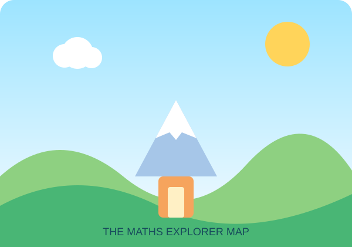

30-WEEK ADVENTURE
Ready to level up your maths powers?
Explore one mission each week, with explanations, hints, colourful challenges and a secret picture that appears as you solve questions.
Start where you are. Build confidence. Keep going.

Your explorer progress
0 of 300 questions solved
Choose a mission
Missions unlock in order so every new skill has a strong foundation.